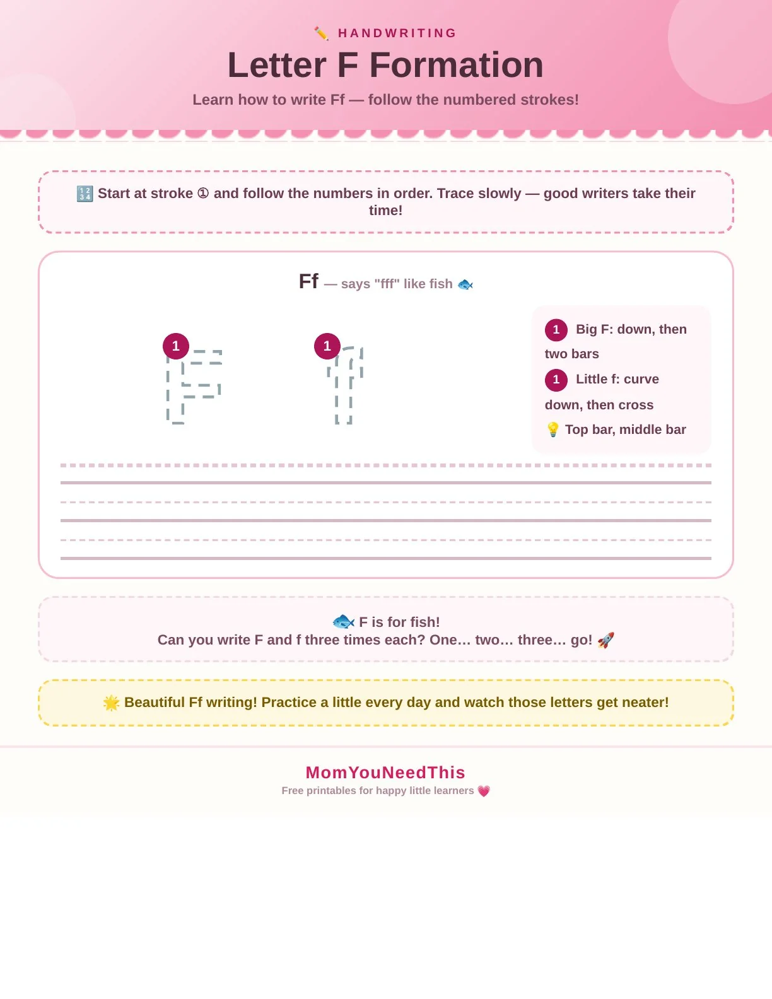

Letter F Formation Practice Trace And Write The Uppercase Letter F
Help your little learner practise forming the uppercase letter F with this fun, no-prep tracing printable. Big, clear letter guides make it easy for little hands.
Quick Answer
Two bars, not three: this free printable teaches preschoolers to form the uppercase letter F with guided tracing rows — and to stop before it turns into an E. Children trace the letter, then try it on their own, building handwriting muscle memory plus the /f/ sound connection with words like fish, frog and flower. Print at home with no signup needed.
At a Glance
- Ages: Preschoolers
- Activity: Forming uppercase F — two bars, not three
- Skills: Letter formation and stroke order
- Format: Printable worksheet (PDF)
- Cost: Free, no signup
🐟 Fish
🐸 Frog
🌸 Flower

✏️ Trace, Then Try On Your Own
Start with a finger: trace the big letter F in the air or on the table while you say how it goes. Then move to the worksheet — trace each F slowly, saying the letter name and its sound: “F says /f/, like fish.” Finish with the try-it-yourself row.
⬇️ Download Free Printable 🖨️ Print🎁 Free printable for toddlers & preschoolers
👆 Say It While You Trace
Say the letter name and its sound each time your child traces. Words like fish, frog and flower all begin with the F sound — naming them as the pencil moves ties the shape to the sound.
🎯 Keep It Short And Sweet
F is quick to trace but easy to rush into an E. A few minutes is plenty for little learners — stop while it is still fun, and end by counting bars together on the best F of the page: two bars, not three.
🎨 Keep Exploring Free Letter Activities
More alphabet learning activities are added regularly for toddlers and preschoolers.
🎁 View All Free Resources✏️ How To Form The Letter F
Letter F is formed like this. Capital F uses straight lines: pull down from top to bottom, then add two bars — top and middle — and stop there; a third bar at the bottom would turn it into an E. Small f is one of the tallest letters: curve over at the top like a hook, pull straight down past the bottom line, then add the short cross in the middle.
Sound and shape travel together on this page: every bar your child adds is a chance to blow out the /f/ sound — f-f-fish. Letters learned as a movement plus a sound are remembered far better than letters learned as pictures to copy.
The mistake to watch for on this page is adding the third bar — children who have just learned E often give F one too. Counting “two bars for F, three for E” while tracing keeps them apart.
🖨️ How to Use This Printable
Get started in minutes — everything here is free and made for busy parents.
- Download the printable. Tap the download button to save the free Free Letter F Formation Practice file to your device.
- Print it out. Use any home printer and regular paper — cardstock works great for pages little hands will use again and again. The print button opens the full-size page in a new tab if you prefer to print from there.
- Learn together. Sit with your child and say the strokes out loud as they trace the letter F — talking through the moves is what turns copying into memory. Short sessions work best.
- Explore more. Check the free printables linked below for your next activity.
❓ Free Letter F Formation Practice FAQs
Is this Free Letter F Formation Practice printable free?
Yes — every printable on MomYouNeedThis is 100% free to download and print. No signup, no payment, just tap the download button and print the F formation page as often as your child wants more practice.
How do I use this letter f printable?
Print the page and trace together, bar by bar: down first, then the top and middle bars — and stop at two. Count them out loud as you go. Short, playful sessions work better than long lessons for little learners.
What literacy skills does this practice?
Formation, pencil control, and letter-sound knowledge. F's page carries a built-in discrimination lesson — two bars versus E's three — so formation practice doubles as careful-looking practice. Paired with its /f/ sound in words like fish, frog and flower, it covers the core pre-writing skills that prepare children for school handwriting.
🔗 More Free Printables You’ll Love
Pair this printable with more free learning activities from the MomYouNeedThis library.
- ✏️ Free Letter B Formation PracticeFree printable letter b formation practice for little learners.
- 🎨 Free Letter F Coloring PageFree printable letter f coloring page for little learners.
- ✏️ Free Uppercase Letter F TracingFree printable uppercase letter f tracing for little learners.
- ✏️ Free Lowercase Letter F TracingFree printable lowercase letter f tracing for little learners.